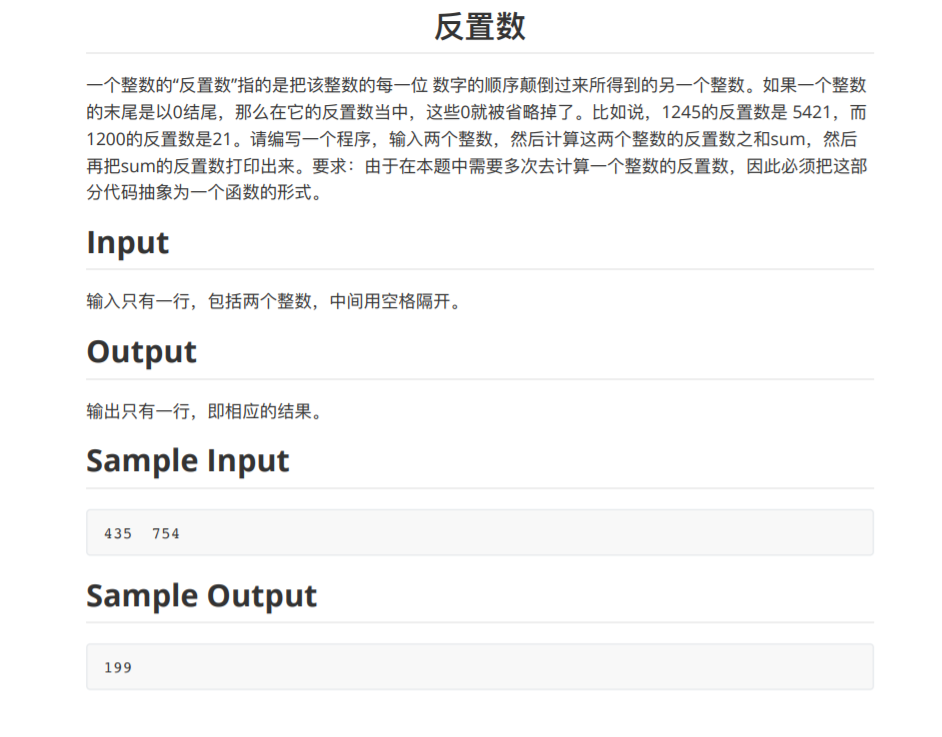

Problem A
AC代码
#include<iostream> using namespace std; int main() { int n,m; int sum1 = 0,sum2 = 0,flag = 0; cin >> n >> m; for(int i = 1;i < n;i++) if(n % i == 0) sum1 += i; if(sum1 == m) flag++; else { cout << "no" << endl; return 0; } for(int i = 1;i < m;i++) if(m % i == 0) sum2 += i; if(sum2 == n) flag++; else { cout << "no" << endl; return 0; } if(flag == 2) cout << "yes" << endl; return 0; }
Problem B

AC代码
#include<iostream> using namespace std; int fun(int x) { int temp = x; int y = 0; while(temp) { int x1 = temp % 10;//5 temp = temp / 10;//43 y = y * 10 + x1;//50 } return y; } int main() { int n,m; cin >> n >> m; int nn = fun(n); int mm = fun(m); int sum = nn + mm; int end = fun(sum); cout << end << endl; return 0; }
Problem C
AC代码
#include<bits/stdc++.h> using namespace std; int main() { string str,s; cin >> str >> s; int len = str.length(); cout << len << "P" << endl; for(int i = 0;i < str.length();i++) { if(str[i] != s[0]) { cout << str[i]; } } return 0; }
Problem D
AC代码
#include<iostream> using namespace std; int main() { int n; cin >> n; int sum = 0; for(int i = 1;i < n;i++) if(n % i == 0) sum += i; if(sum == n) cout << "yes"; else cout << "no"; return 0; }
全是水题